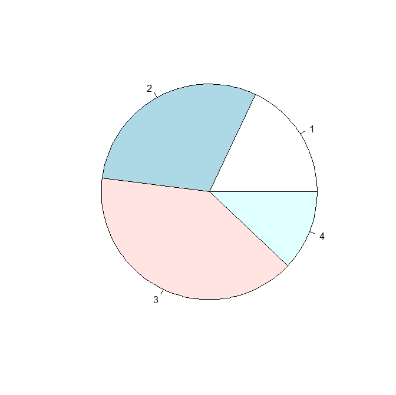
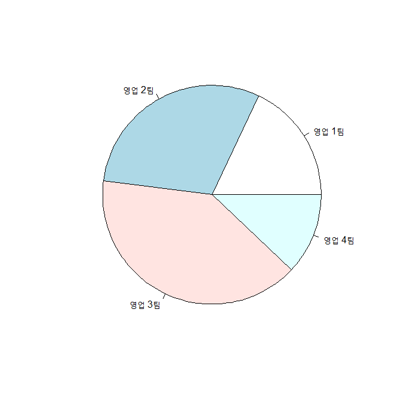
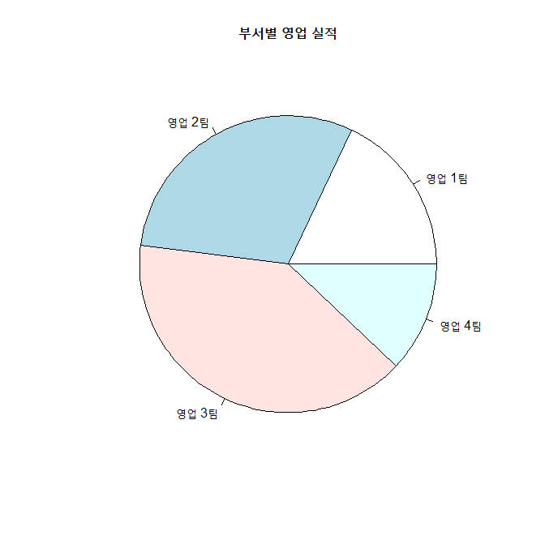
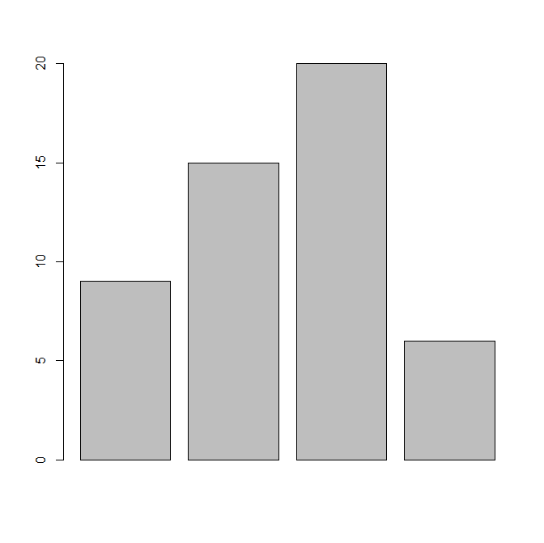
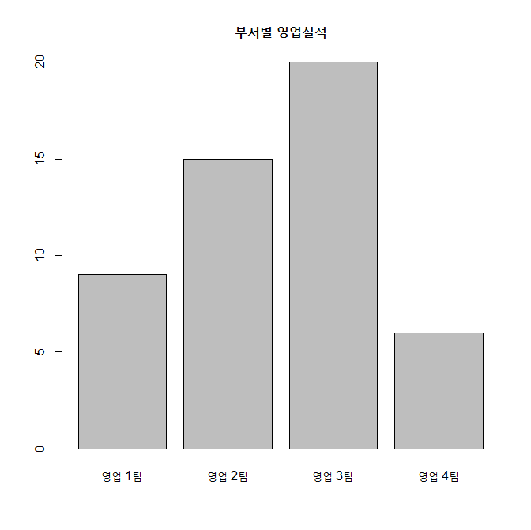
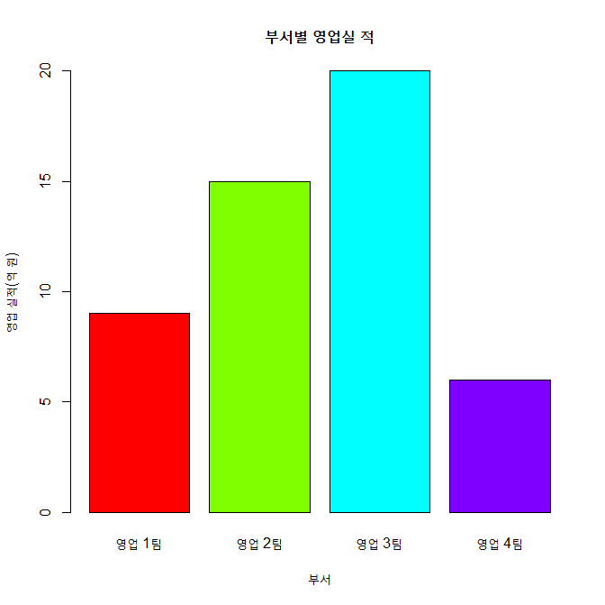
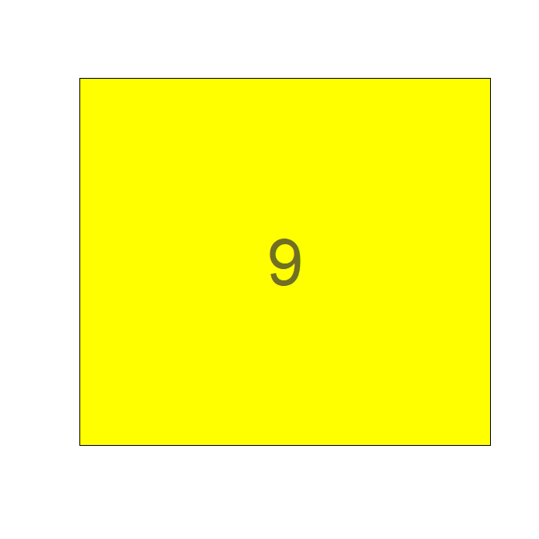
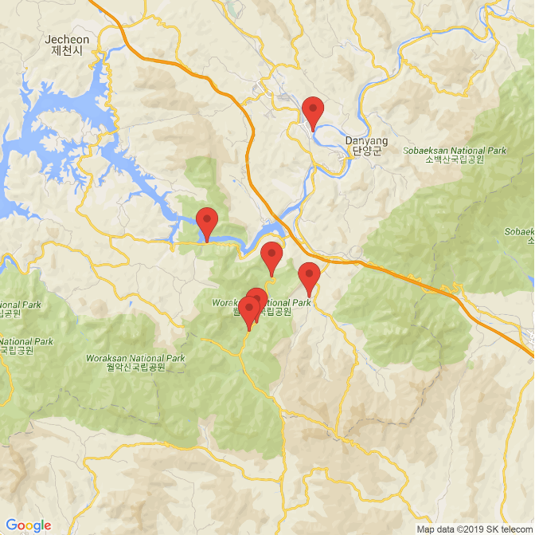
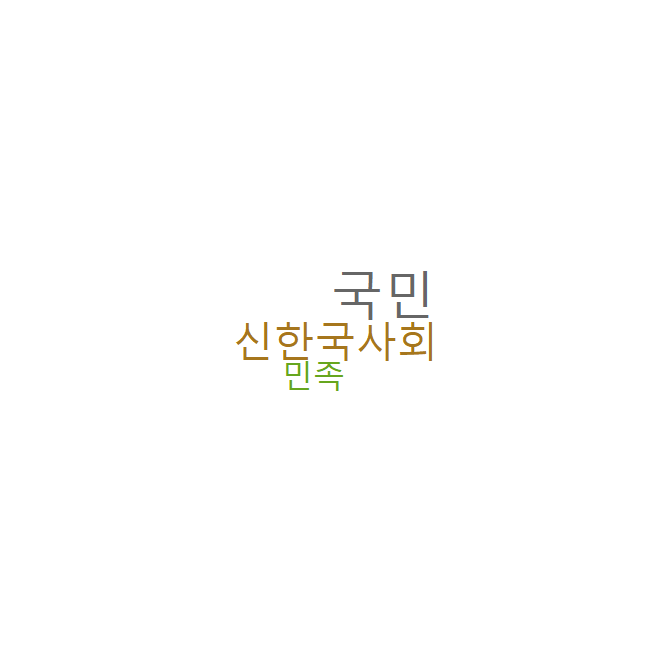
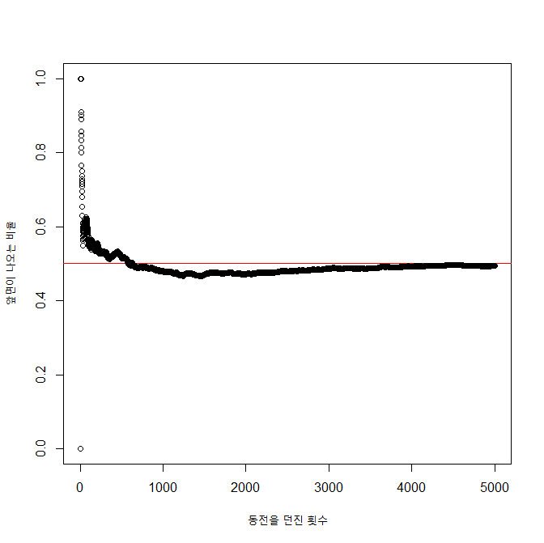

제4장 무조건 해 보기
1. 차트로 영업실적 비교하기
1-1. 파이 차트
1) 단순 파이 차트
xxxxxxxxxxx <- c(9, 15, 20, 6)pie(x) # 벡터 데이터의 파이차트 그리기 # 차트의 조각들에 데이터의 색인번호가 출력됨.결과 :

2) 파이차트의 데이터라벨 달기
xxxxxxxxxxlabel <- c("영업 1팀", "영업 2팀", "영업 3팀", "영업 4팀") # 데이터 요소들의 이름 지정하기pie(x, labels = label) # 데이터 요소들의 이름을 차트에 출력하기결과 :

3) 파이차트의 전체 제목 달기
xxxxxxxxxxpie(x, labels = label, main="부서별 영업 실적") # 차트의 제목 출력결과 :

(최종)
xxxxxxxxxxpie(x, # 벡터 데이터 labels=label, # 벡터 데이터의 names main="부서별 영업 실적") # 차트의 제목결과 :
1-2. 바 차트
1) 단순 바 차트 그리기
xxxxxxxxxxheight <- c(9, 15, 20, 6)name <- c("영업 1팀", "영업 2팀", "영업 3팀", "영업 4팀")barplot(height) # 벡터 데이터를 바차트로 출력결과 :

2) 바차트의 x축에 제목 달기
xxxxxxxxxxbarplot(height, # 벡터 데이터 names.arg = name) # 벡터 데이터의 names결과 :
3) 바차트에 제목 달기
xxxxxxxxxxbarplot(height, # 벡터 데이터 names.arg = name, # 벡터 데이터의 names main = "부서별 영업실적") # 차트 제목결과 :

4) 바차트의 바에 색깔칠하기
xxxxxxxxxxbarplot(height, # 벡터 데이터 names.arg = name, # 벡터 데이터의 names main = "부서별 영업실적", # 차트 제목 col = rainbow(length(height)))결과 :
5) 바차트의 X축에 제목달기
xxxxxxxxxxbarplot(height, # 벡터 데이터 names.arg = name, # 벡터 데이터의 names main = "부서별 영업실적", # 차트 제목 col = rainbow(length(height)), # 바의 색깔 지정 xlab = "부서")결과 :
6) 바차트의 y축에 제목달기
xxxxxxxxxxbarplot(height, # 벡터 데이터 names.arg = name, # 벡터 데이터의 names main = "부서별 영업실 적", # 차트 제목 col = rainbow(length(height)), # 바의 색깔 지정 xlab = "부서", # x축 제목 ylab = "영업 실적(억 원)") # y축 제목결과 :

7) 최종
xxxxxxxxxxbarplot(height, # 벡터 데이터 names.arg = name, # 벡터 데이터의 names main = "부서별 영업실 적", # 차트 제목 col = rainbow(length(height)), # 바의 색깔 지정 xlab = "부서", # x축 제목 ylab = "영업 실적(억 원)") # y축 제목결과 :
#####
2. 애니메이션으로 카운트 다운
2-1. 문자 출력: 카운트 다운
xxxxxxxxxxinstall.packages("animation") # 'animation' package 설치library(animation) # 'animation' package 사용ani.options(interval = 1) # 시간 간격 = 1초plot.new() # 새로운 그래픽 프레임 출력for (i in 10:0) { # 10 ~ 1 까지 1씩 감소하면서 반복 rect(0, 0, 1, 1, col="yellow") # 그래픽 프레임 내에서 그래픽 출력 영역을 최대로 설정하여, 노란색으로 출력 text(0.5, 0.5, i, # i 값은 (0.5, 0.5) 위치에 출력 cex=5, # 출력되는 글자의 크기 col=rgb(.2,.2,.2,.7)) # 색깔 지정 ani.pause() # 1초간 애니메이션 대기}결과 :

3. 단양팔경을 구글 맵 위에
3-1. 단양팔경 위치 출력
xxxxxxxxxxinstall.packages("ggplot2")install.packages("RgoogleMaps")install.packages("ggmap")library(ggplot2)library(RgoogleMaps)library(ggmap)names <- c("1.도담삼봉/석문", "2.구담/옥순봉", "3.사인암", "4.하선암", "5.중선암", "6.상선암")addr <- c("충청북도 단양군 매포읍 삼봉로 644-33", "충청북도 단양군 단성면 월악로 3827", "충청북도 단양군 대강면 사인암2길 42", "충청북도 단양군 단성면 선암계곡로 1337", "충청북도 단양군 단성면 선암계곡로 868-2", "충청북도 단양군 단성면 선암계곡로 790")addr결과 :
xxxxxxxxxx## [1] "충청북도 단양군 매포읍 삼봉로 644-33" "충청북도 단양군 단성면 월악로 3827" ## [3] "충청북도 단양군 대강면 사인암2길 42" "충청북도 단양군 단성면 선암계곡로 1337" ## [5] "충청북도 단양군 단성면 선암계곡로 868-2" "충청북도 단양군#####
3-2. 구글지도위에 표시하기
xxxxxxxxxxregister_google(key="Google_API_Key") # Google API Key 사용gc <- geocode(enc2utf8(addr)) # 주소지에 대한 geocode 확보gcdf <- data.frame(name=names, lon=gclon, lat=gclat) # 데이터 프레임 생성dfcen <- c(mean(dflon), mean(dflat)) # 중앙지점의 좌표 계산cenmap <- get_googlemap(center=cen, maptype="roadmap",zoom=11, marker=gc) # 지도 정보 가져오기ggmap(map, fullpage = TRUE) # 구글 지도에 표시결과 :
xxxxxxxxxx> gc## # A tibble: 6 x 2## lon lat## <dbl> <dbl>## 1 128. 37.0## 2 128. 36.9## 3 128. 36.9## 4 128. 36.9## 5 128. 36.9## 6 128. 36.9> df## name lon lat## 1 1.도담삼봉/석문 128.3433 37.00300## 2 2.구담/옥순봉 128.2560 36.93046## 3 3.사인암 128.3404 36.89439## 4 4.하선암 128.3094 36.90788## 5 5.중선암 128.2969 36.87783## 6 6.상선암 128.2907 36.872> cen## [1] 128.3061 36.9143

4. 워드 클라우드로 연설문 키워드 분석
키워드와 빈도수에 대한 워드 클라우드 출력
xxxxxxxxxxinstall.packages("wordcloud")install.packages("RColorBrewer")library(wordcloud)library(RColorBrewer)pal2 <- brewer.pal(8,"Dark2") # 팔레트 생성 : pal2x <- c("국민", "신한국사회", "민족") # 키워드 목록y <- c(5, 4, 3) # 키워드의 빈도(Count)wordcloud(x, y, colors=pal2) # 키워드의 빈도수에 따라 Dark2 색으로 wordcloud 출력결과 :

5. 동전 던지기 시뮬레이션
동전을 5,000번 던질 때 횟수에 따라 앞면이 나오는 확률의 변화
xxxxxxxxxxiteration <- 5000plot(0, 0, xlab="동전을 던진 횟수", ylab="앞면이 나오는 비율", xlim=c(0, iteration), ylim=c(0, 1))abline(a=0.5, b=0, col="red")sum <- 0for(x in 1:iteration) { y <- sample(c("앞면", "뒷면"), 1, replace=T) if ( y == "앞면") sum = sum + 1 prob <- sum / x points(x, prob)}결과 :
